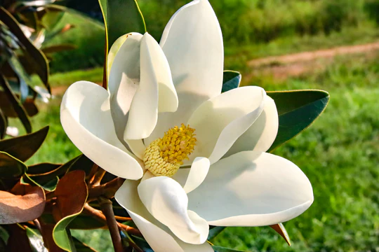

Magnólia
Morfologia
Tamanho:
6 a 30 metros, dependendo da espécie. A grandiflora possui de 12 a 24 metros.
Tronco/caule:
Madeira relativamente macia, casca amarga (plantas medicinais com sabor intenso, utilizadas para problemas digestivos e hepáticos), mais ou menos aromáticos.
Raíz:
Espessa, suculenta e rica em reservas de nutrientes (carnosa), mas que possui uma textura frágil e macia (delicada).
Rramo:
Apresentam cicatrizes das folhas e das estípulas que caíram.
Broto:
Pontiagudo
Folhas:
Largas, verde-escuras e brilhantes. Podem ser caducas (caem uma vez por ano) ou persistentes (mantém durante o ano todo).Podem ser finas ou grossas. Possuem nervuras (feixes vasculares (xilema e floema) responsáveis pela sustentação e transporte de seiva), normalmente acompanhadas de estípulas (pequenas estruturas em forma de lâmina ou escama, geralmente em pares, localizadas na base do pecíolo (inserção da folha no caule) de muitas plantas vasculares).
Flor:
Grandes, pétalas aveludadas e perfume suave. são solitárias, localizadas na ponta dos ramos. Podem ser sem pedúnculo (Haste que sustenta uma flor solitária ou fruto) ou com um pedúnculo curto. Normalmente brancas ou amareladas, dependendo da espécie pode ser rosa e roxa ou verde e amarela. Floresce geralmente na primavera.
Fruto:
Tem forma de cone e é formado por vários folículos (pequenas estruturas que se abrem quando maduras), geralmente de cor vermelha ou marrom.
Sementes:
São envolvidas por uma camada carnosa avermelhada e ficam penduradas por um longo filamento quando maduras.
